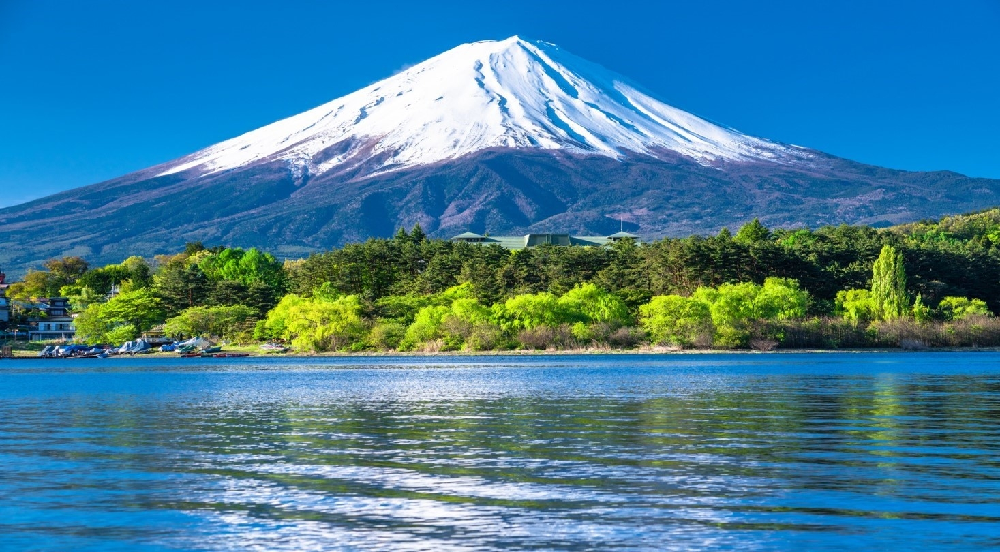
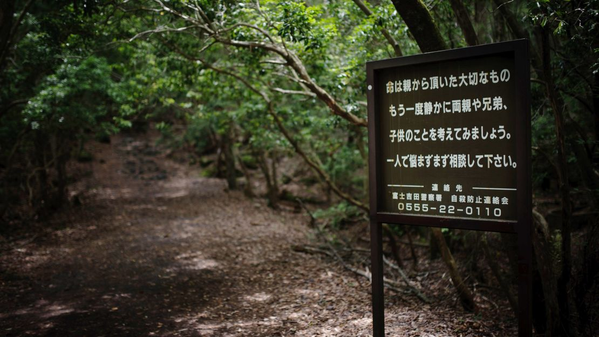
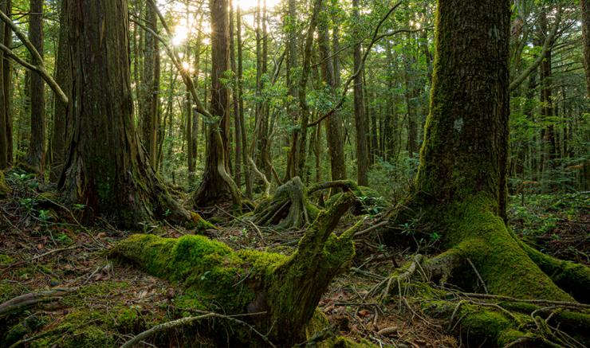

Aokigahara Forest


Located at the base of Mount Fuji in Japan, this forest is also known as the "Sea of Trees" (Jukai). It covers an area of approximately 30 square kilometers. The forest was formed on hardened lava that flowed from a major eruption of Mount Fuji about 1,200 years ago.
The ground of this forest is made of dense, hardened volcanic lava.
- Caves: There are numerous Ice Caves and Wind Caves located within the forest.
- Sound: Because the ground is made of porous lava rock, it absorbs sound. This creates a unique and eerie sense of absolute silence within the forest.
- Magnetic Fields: It is said that compasses may not function correctly here due to the rich iron deposits in the volcanic soil.
Although not as vast as the Amazon, it is home to various plants and animals native to Japan.
- Animals: Asian black bears, foxes, and various bird species inhabit the area.
- Plants: Ancient coniferous trees and branches covered in thick moss give the forest its mysterious and haunting appearance.
Aokigahara is famous worldwide due to its dark and somber history.
- Yurei (Ghosts): According to Japanese folklore, the forest is said to be haunted by restless spirits or ghosts known as Yurei.
- Public Attention: Unfortunately, it has gained notoriety as one of the world's most frequent sites for suicides. Consequently, the Japanese government has placed signs throughout the forest urging visitors to think of their families and seek help.
Despite its dark reputation, it is a place of high natural beauty.
- Many tourists visit the Narusawa Ice Cave while on their way to see Mount Fuji.
- It is perfectly safe for hikers as long as they stay on the officially marked designated trails.
